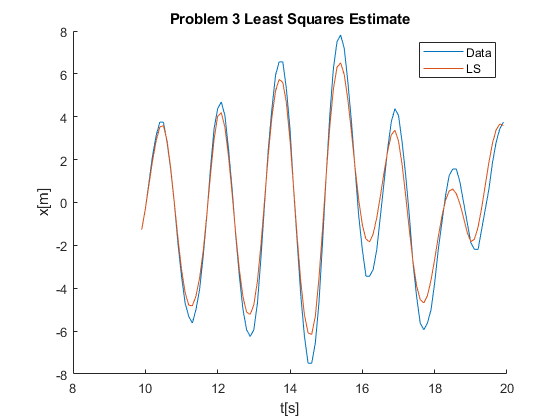
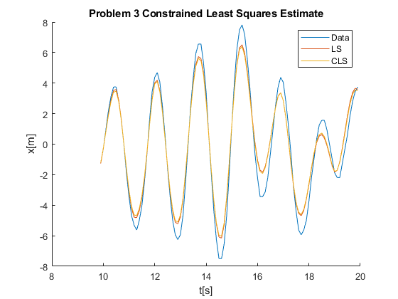

Contents
2
G0=tf([0 1 -1.3],[1 -1.5 0.8],1); H0=tf([1 -1.8 1.2],[1 -1.5 0.8],1);
N=4096; u=sign(randn(N,1)); e=randn(N,1);
y=lsim(G0,u) + lsim(H0,e);
PHI = [u(3:N) u(2:N-1) u(1:N-2) -y(2:N-1) -y(1:N-2)];
Y = y(3:N);
disp('Problem 2 Least Squares Estimate:');
theta = PHI\Y
for i = 1:100
G0=tf([0 1 -1.3],[1 -1.5 0.8],1); H0=tf([1 -1.8 1.2],[1 -1.5 0.8],1);
N=4096; u=sign(randn(N,1)); e=randn(N,1);
y=lsim(G0,u) + lsim(H0,e);
PHI = [u(5:N) u(4:N-1) u(3:N-2) -y(4:N-1) -y(3:N-2)];
XI = [u(5:N) u(4:N-1) u(3:N-2) u(2:N-3) u(1:N-4)];
Y = y(5:N);
theta(:,i) = (XI'*PHI)\(XI'*Y);
end
disp('Problem 2 Instrumental Variable Least Squares Estimate:');
mean(theta')'
Problem 2 Least Squares Estimate:
theta =
-0.0144
1.0425
-0.4210
-0.6792
0.1858
Problem 2 Instrumental Variable Least Squares Estimate:
ans =
0.0032
0.9971
-1.2984
-1.4973
0.7975
3
clear all
load('mass_spring_damper.mat');
N = length(t);
PHI = [u(2:end-1) u(1:end-2) -y(2:end-1) -y(1:end-2)];
Y = y(3:end);
disp('Problem 3 Least Squares Estimate:');
theta = PHI\Y
A = [2.3 2.3 -1 -1];
b = 1;
R = 1/(N - 1)*PHI'*PHI;
F = 1/(N - 1)*PHI'*Y;
disp('Problem 3 Constrained Least Sqaures Estimate:');
thetacls = [R A'; A 0]\[F;b]
G0=tf([0 theta(1) theta(2)],[1 theta(3) theta(4)],1);
ysim = lsim(G0,u);
G0CLS=tf([0 thetacls(1) thetacls(2)],[1 thetacls(3) thetacls(4)],1);
ysimcls = lsim(G0CLS,u);
figure; hold on; title('Problem 3 Least Squares Estimate');
plot(t(100:200),y(100:200));
plot(t(100:200),ysim(100:200));
legend('Data','LS'); xlabel('t[s]'); ylabel('x[m]');
figure; hold on; title('Problem 3 Constrained Least Squares Estimate');
plot(t(100:200),y(100:200));
plot(t(100:200),ysim(100:200));
plot(t(100:200),ysimcls(100:200));
legend('Data','LS','CLS'); xlabel('t[s]'); ylabel('x[m]');
Problem 3 Least Squares Estimate:
theta =
0.0327
0.0344
-1.7538
0.9011
Problem 3 Constrained Least Sqaures Estimate:
thetacls =
0.0312
0.0329
-1.7569
0.9044
0.0116
 